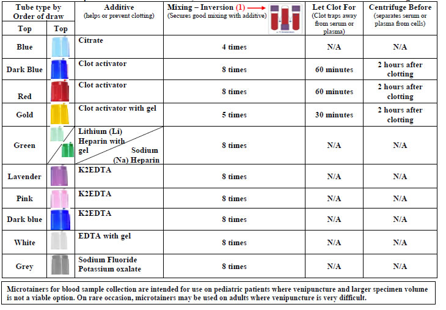
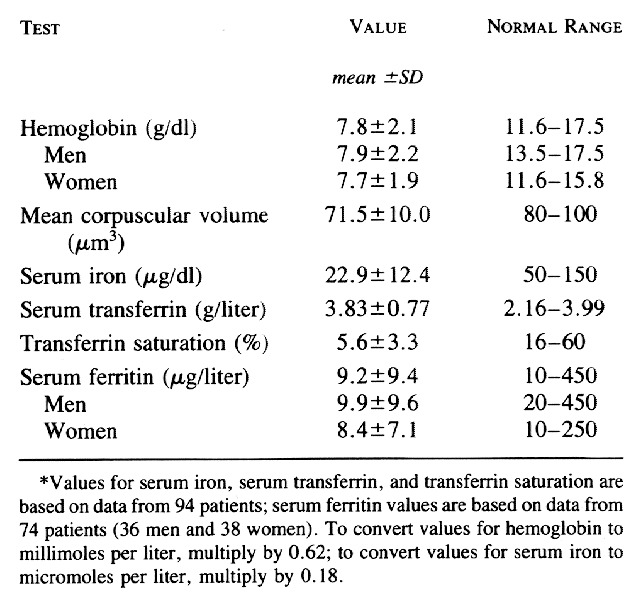

Complete Blood Count (CBC) - What is its purpose?
A complete blood count is used to assess the three types of cells that make up the blood: red blood cells, which transport oxygen throughout the body; white blood cells, which serve in the defense of the organism; and platelets, which play a role in blood clotting.
It can be performed to confirm or rule out a diagnosis and may also complement a medical investigation involving a health issue. The test is also utilized to monitor the overall health status of a patient during medical treatments or periodically for preventive check-ups.
How is the complete blood count conducted?
The complete blood count is performed by extracting a blood sample from the patient using a tube called EDTA (3 ml with a purple cap). This sample can be collected either in a laboratory or at home by a specialized professional. Once collected, the samples are sent to a laboratory where they are analyzed and processed appropriately.
To prepare for this examination:
- Do not consume alcoholic beverages 72 hours before the test.
- Avoid physical exercise on the day before the test.
Material: Whole blood smear
Type of Result: Ordinal quantitative
Sector: Hematology
Method: Microscope
What diseases does the test detect?
A complete blood count can detect the cause of symptoms such as weakness, fever, and weight loss, and it is also an important tool in diagnosing viral and bacterial infections. Other diseases that can be assessed through a complete blood count include:
- Anemia
- Leukemia
- Lymphomas
- Myelomas
- Polycythemia (overproduction of blood cells)
- Allergies
How is a blood count done?
Blood test consists of an exam often used in healthcare to determine its physiological and biochemical state. It can be useful to recognize diseases, the effectiveness of pharmaceutical drugs, organ function, et cetera.
The blood is usually collected with a needle attached to a syringe inserted into the vein, after labeling the sample and documenting the patient's info, the vacutainer tubes containing the blood gets sent to processing and then analysis; most routine laboratory tests are performed in plasma or serum, to achieve that, they must be separated from the blood cells by centrifugation.
Most commonly, blood tests are used to count and measure red blood cells, white blood cells, and platelets. There are a few different ways to identify what’s going to be analyzed in the test, in a way to avoid possible mistakes, the vacutainer tubes are identified with the following colors below:
- Light blue: Sodium citrate, used for coagulation tests;
- Red: Red/plain, used for immunology or serological examination;
- Gold: Serum separating tube, used for all biochemistry tests;
- Light green: Heparin tube, prevent clotting - used for chromosome testing, HLA typing, ammonia, lactate.
- Purple: EDTA, used for a complete hemogram;
- Pink: EDTA (whole blood sample being sent to transfusion lab), used for testing autoimmune anemia, HIV viral load;
- White: Sodium fluoride, used for glucose or lactate testing;
- Yellow: Acid-citrate-dextrose, used for DNA studies, HIV cultures, and tissue typing.
Technologies in Biomedicine
Technologies in Biomedicine are of paramount importance, both for clinical and laboratory practice. Through technologies, several processes have become more effective and diagnoses more accurate. It is worth highlighting that they can help from scheduling an online exam to optimizing time, as, through automated and agile processes, the team can provide better quality services.
Many laboratories have state-of-the-art technologies; previously, much equipment was used manually. As time goes by, more diseases appear, with this, the large volume of exams also and consequently the demand for new research, through situations like these, the laboratories needed to be adapted with equipment that could meet great demands.
Some exams such as the blood count are examples of technologies in Biomedicine. The Portuguese hospital (BA) has become a reference in automation; unlike many laboratories, the analysis is carried out in a fully automated way, and through cutting-edge equipment, it is possible to generate hematological reports.
Reading the Biochemical Exam
When performing an analysis flank on the reading of laboratory markers, it is essential, firstly, to emphasize that the results are delivered to the patient along with their respective reference values for each analyzed analyte. In this context, it is noteworthy that an analyte is the component of the sample obtained in the organism that acts as a marker of health and proper functioning of a specific organ or system.
That way, a comparison is established between the patient's values for each marker in the analysis and their respective reference values, obtained from an average of values from a previously analyzed healthy population in similar conditions of sex, age, and ethnicity.
In this context, it is observed that this analysis must be done by a specialized doctor who will take into consideration the individual's organism's latest values recorded for a particular analyte, using the individual variations in comparison to the recorded average, as well as potential interferents in biochemical tests such as medication usage and the patient's medical history.
Among the medications that can alter biochemical values in your test, it is worth noting:
- Paracetamol
- Acyclovir
- Amphotericin B
- Ampicillin
- Ascorbic Acid (Vitamin C)
- Acetylsalicylic acid
- Calcium
- Vitamin D
- Captopril
- Chloroquine
- Codeine
- Contraceptives
EXAMPLE OF VALUES PROVIDED BY THE BIOCHEMICAL TEST/EXAM
In this case, the value obtained from the patient’s sample falls within the reference standards, indicating a condition possibly within the normal range. This comparison would be carried out for all other values obtained as per the medical request, analyzing discrepancies in relation to the patient’s specific medical history.